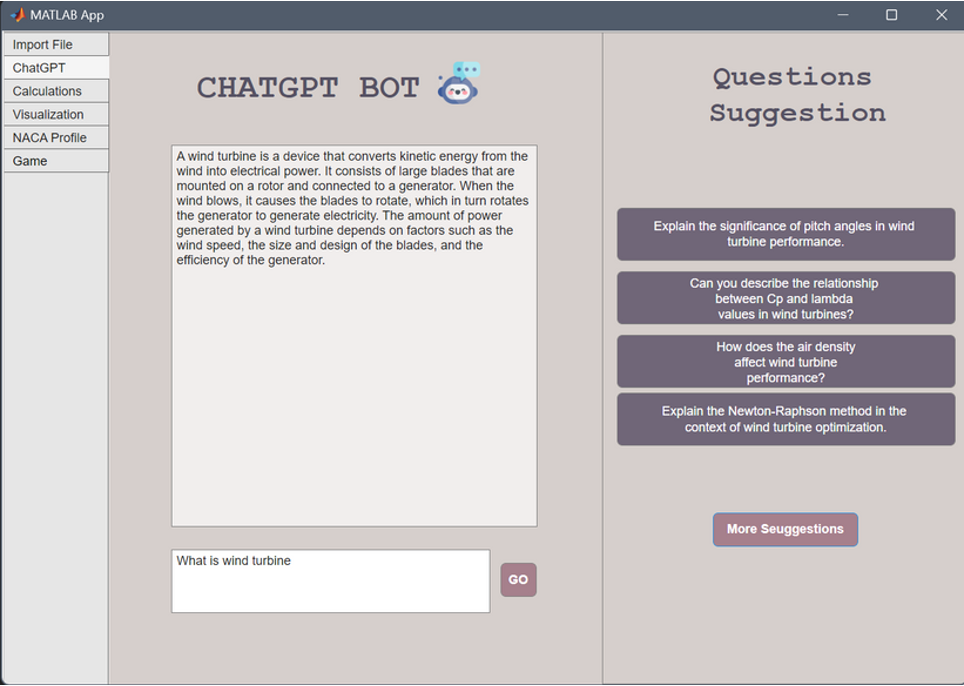
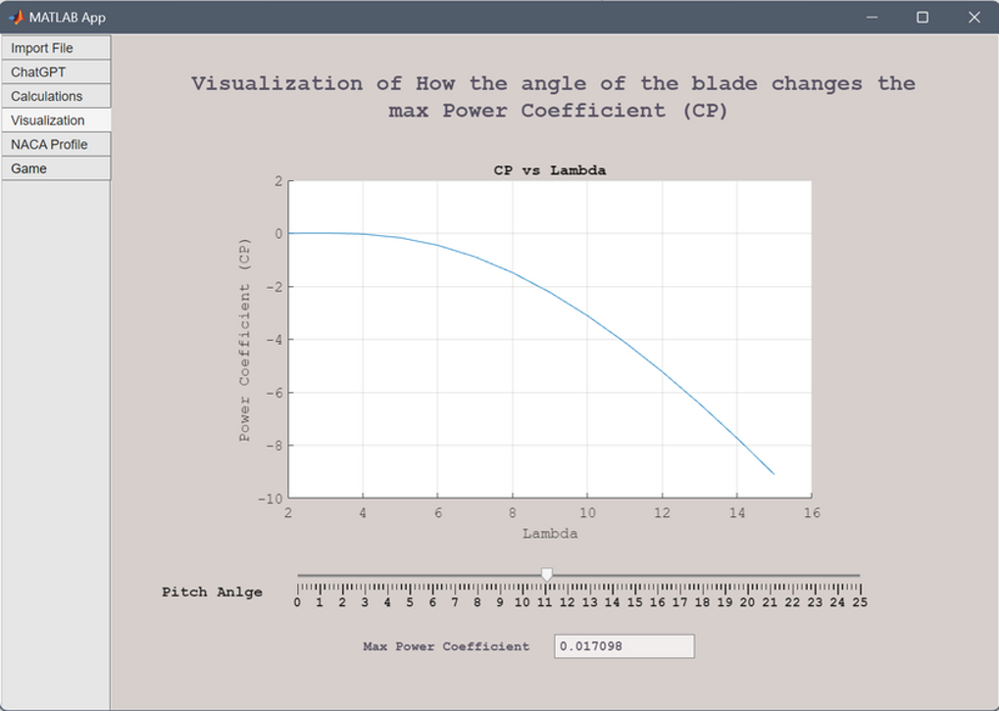
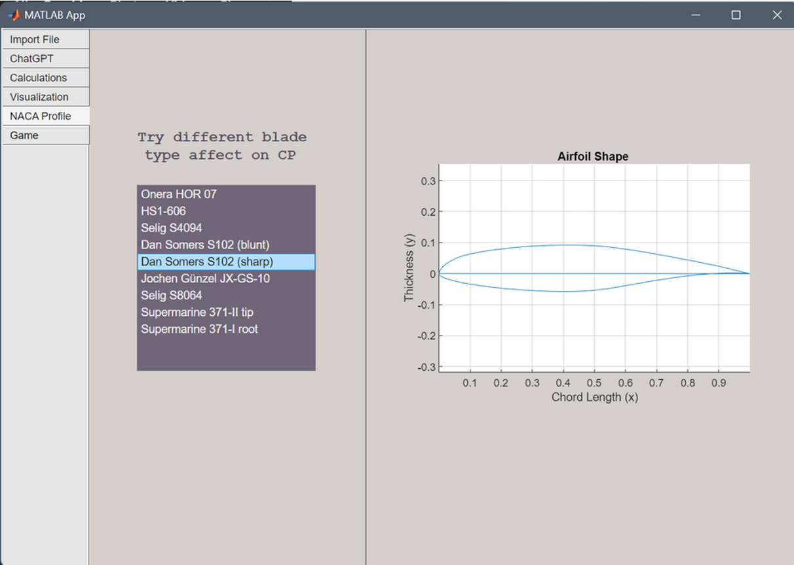
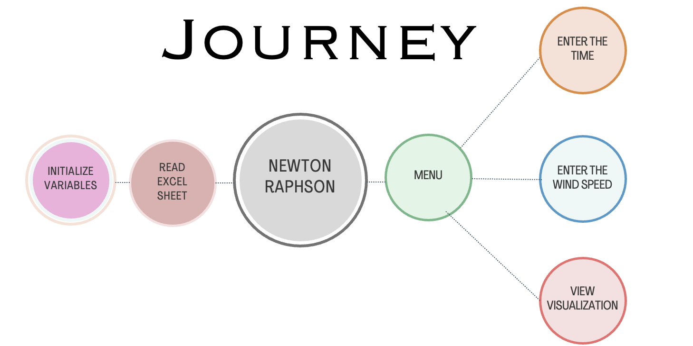

Optimizing Wind Turbines for Maximum Power Generation
The Challenge
The global shift towards renewable energy sources has put a spotlight on wind power. A key challenge in this field is maximizing the energy captured from the wind. The power coefficient (Cp) of a turbine, which is a measure of its efficiency, is dependent on several factors, including the tip-speed ratio (lambda) and the blade pitch angle (theta). This project aimed to create a tool to analyze and visualize this relationship to find the peak performance point.
Our Solution
We developed a desktop application that allows users to calculate and visualize key performance metrics of a wind turbine. The application takes wind speed or time data from an Excel file and calculates the maximum power coefficient (Cp) using the Newton-Raphson method for numerical optimization.
1. Application Home Page
This image shows the main interface of your application, including the navigation and the option to import an Excel file. It's a great opening visual.
2. Integrated ChatGPT Feature
This screenshot shows the educational component of the application, where users can ask ChatGPT for information about wind energy. It highlights the interactive learning aspect of the project.
3.Calculations & Visualizationsn
This single, powerful screenshot captures the core functionality of the app. It displays the user input panel, the calculated output (Power, CP), and both the 2D (Cp vs TSR) and 3D (Cp vs TSR vs Theta) performance graphs in one comprehensive view. This is your primary project image.
4. Interactive Pitch Angle Visualization
This interactive visualization allows users to manipulate the blade's pitch angle with a slider and instantly see the effect on the Power Coefficient vs. Lambda curve. It provides a hands-on demonstration of how pitch control is critical for optimizing turbine performance.
5. NACA Airfoil Profiles
This view demonstrates the app's capability to visualize different NACA airfoil shapes based on user selection, allowing for a deeper understanding of how blade design impacts a turbine's profile.
Key Features
- Data Input: Users can import an Excel sheet containing wind data or manually input specific wind speeds or times.
- Core Calculation: The application uses the Newton-Raphson method to find the optimal tip-speed ratio that maximizes the power coefficient.
- Interactive Visualizations:
- - Generates 2D graphs of the Power Coefficient (Cp) vs. Tip Speed Ratio (λ) for various blade pitch angles (θ).
- - Produces interactive 3D surface plots showing the relationship between Cp, lambda, and theta.
- - Users can select a specific blade pitch angle to see its corresponding performance curve and maximum power coefficient.
- Educational Components:
- - An integrated ChatGPT section for users to ask questions about wind energy.
- - A section displaying different NACA airfoil shapes used in various wind turbine blades.
Application Flowchart
This flowchart outlines the application's logical journey from initialization to displaying results.
Step 1: Initialization
The application starts by initializing all necessary variables. It then reads the wind data from a user-provided Excel sheet to prepare for calculations.
Step 2: Main Menu
The user is presented with a menu of options to choose their desired action.
Step 3: User Input & Core Calculation
The user can select one of three main paths:
- A) Input by Time: The user provides a specific time, and the application retrieves the corresponding wind speed from the Excel data.
- B)Input by Speed: The user directly enters a specific wind speed.
- C)View Visualization: The user proceeds directly to the output graphs.
For options A and B, the application uses the Newton-Raphson numerical method. This is the core of the program, used to calculate the optimal Tip Speed Ratio (TSR) that results in the maximum Power Coefficient (CP) for the given wind speed.
Step 4: Output & Visualization
The application displays the calculated results, including the maximum power and the optimal CP. The results are presented visually through a series of interactive 2D and 3D graphs, allowing the user to understand the relationships between different operational parameters.
Technical Details
The core of the application's calculation engine is the Newton-Raphson method, an iterative numerical technique used to find the roots of a real-valued function. In our case, it's used to find the maximum of the power coefficient function by finding where its derivative is zero. The application's code journey involves:
- Initializing variables and reading data from an Excel sheet.
- Implementing the Newton-Raphson method to solve for the optimal tip-speed ratio.
- A user-friendly menu to navigate between entering wind speed, time, or viewing visualizations.
- Interpolation techniques for handling data points between measured values.
- Generating and displaying 2D and 3D graphs of the results.
Conclusion & Impact
This project successfully created a robust educational tool that bridges the gap between theoretical knowledge and practical application in wind turbine technology. The application provides users with accurate calculations and engaging visualizations, enhancing their understanding of how different parameters affect turbine efficiency. It stands as a valuable resource for students, researchers, and renewable energy enthusiasts looking to explore the dynamics of wind power generation.